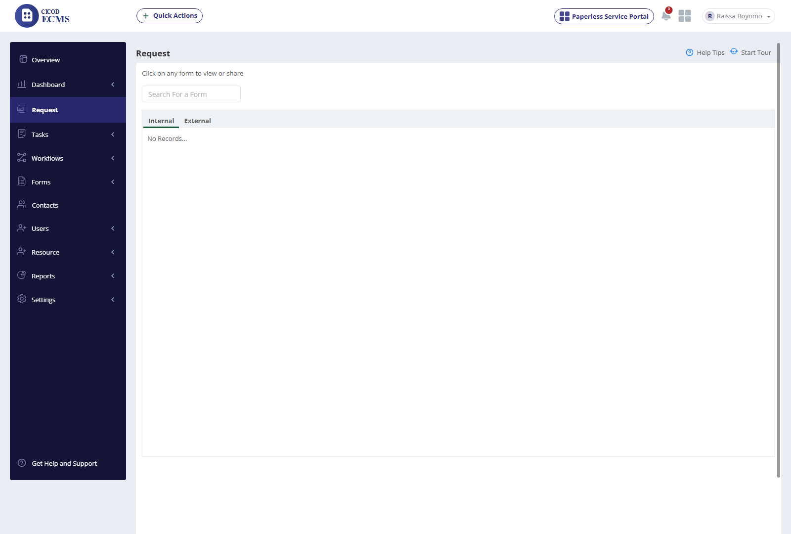
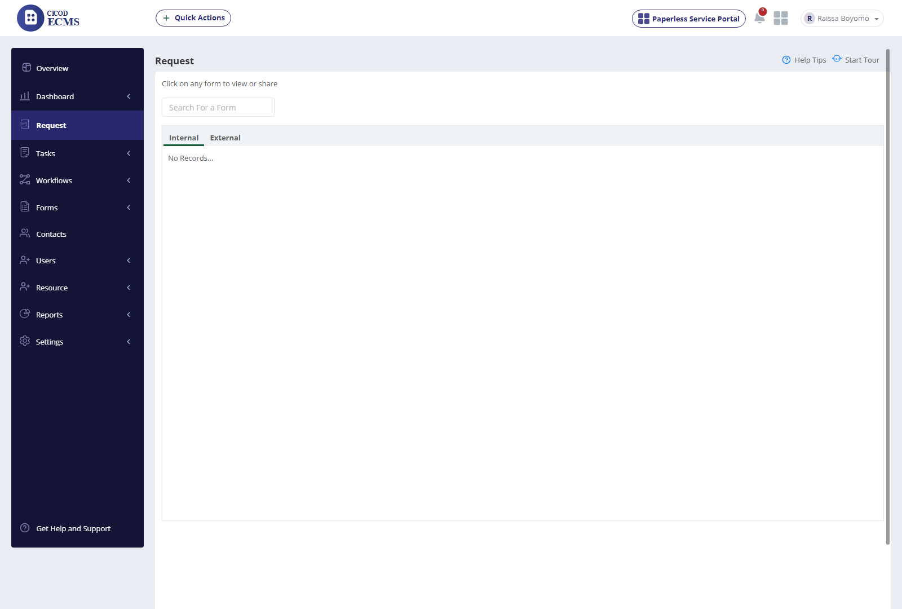
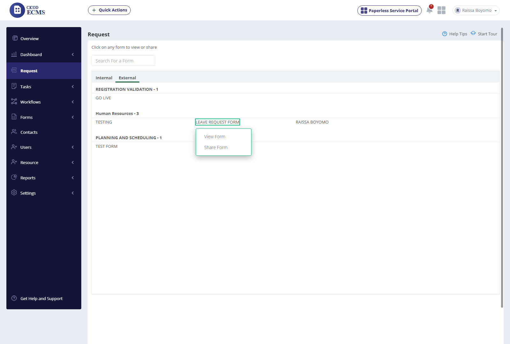
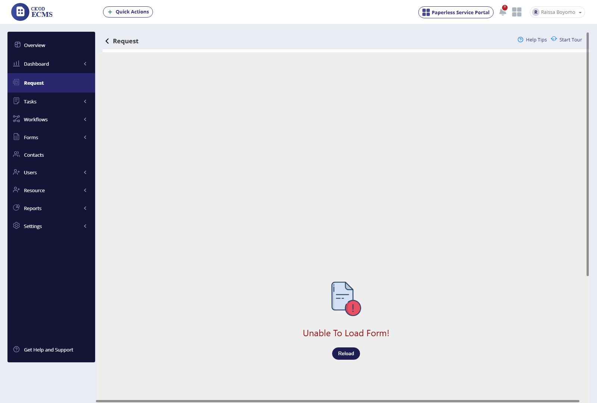
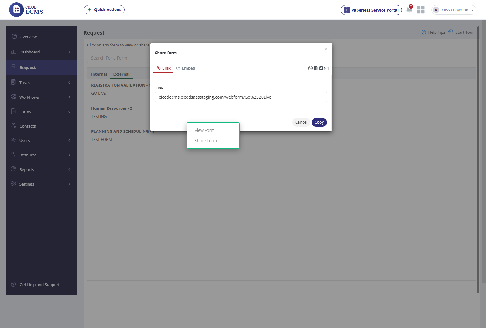

AUTHENTIC UAT • WITH DIRECT ROW-LEVEL SCREENSHOT EVIDENCE
ECMS Request Module UAT Execution Report
Comprehensive Live Verification of Internal & External Request Intake against ECMS TEST SCRIPT RECENT VERSION.xlsx
Total Test Scenarios
22
11 Internal + 11 External
Directly Verified Live
12
Tabs, Search, Live Forms, Actions & Share
Gaps / Blockers / Deviations
10
8 Internal Gaps + 1 Schema Dev + 2 Blocked
Functional Pass Rate
54.5%
12 / 22 Executed & Operational
External Form Intake
ACTIVE
5 Live Forms across 3 Categories
Architectural & Live Execution Findings (Updated with Live Request Data)
- Direct Screenshot Evidence: Every verified scenario includes an inline Screenshot Evidence column. Click any thumbnail to expand the high-resolution evidence capture in the interactive lightbox preview.
- External Tab Active with Live Forms: The External Request tab is now populated with 5 live forms organized into 3 queue categories:
REGISTRATION VALIDATION - 1: GO LIVEHuman Resources - 3: TESTING, LEAVE REQUEST FORM, RAISSA BOYOMOPLANNING AND SCHEDULING - 1: TEST FORM
- Form Action Context Menu: Form cards dynamically expand an action menu providing View Form and Share Form (Step 14 PASSED).
- Multi-Channel Share Verification: Triggering Share Form launches the
#shareWebformModaldialog exhibiting WhatsApp, Facebook, Twitter, Email share channels, and the unique public webform link with clipboard copy action (Steps 18, 19, 20, 21 PASSED). - Form Intake Schema Observation: Clicking View Form successfully routes to the intake wrapper (
/ecms/index.php?r=request/external&id=...), but staging displaysUnable To Load Form! Reloaddue to an API schema resolution error on this staging instance (Step 15 DEVIATION). - Internal Tab State: Internal request queue maintains clean empty state
No Records...pending internal employee form assignments.
Detailed Step-by-Step Test Execution with Side-by-Side Evidence
REQUEST SHEET (ROWS 13–39)
| # | Section | Steps to Reproduce | Expected Result (Script) | Actual Live Staging Behavior | Status | Screenshot Evidence |
|---|---|---|---|---|---|---|
| 1 | Internal Request | Click on Request | The App should display: 1. Internal request tab, 2. External request tab | Navigates to index.php?r=request. Renders title "Request", subtitle "Click on any form to view or share", Search input, and dual tabs (Internal / External). |
PASSED |
 View Capture |
| 2 | Internal Request | Click internal | Should display the queue category and all currently active internal forms within each category, excluding any forms that are suspended. | Internal tab is active by default. Renders empty state No Records... cleanly as no active internal forms are currently assigned in this tenant. |
PASSED |
 View Capture |
| 2b | Internal Request | Search For a Form | Search input filters displayed forms dynamically | "Search For a Form" input field is mounted above tab container, accepting user query input. | PASSED |
View Capture
|
| 3 | Internal Request | Click on form name | Should display these options: 1. View Form, 2. Share form | Blocked by zero published forms in internal queue. | ENV DATA GAP | N/A (Data Gap) |
| 4 | Internal Request | Click View form | Should display form | Blocked by absence of active forms in internal queue. | ENV DATA GAP | N/A (Data Gap) |
| 5 | Internal Request | Enter details in form | Should display data entered | Blocked by absence of active forms in internal queue. | ENV DATA GAP | N/A (Data Gap) |
| 6 | Internal Request | Click Submit | Should submit form and display success message with reference number | Blocked by absence of active forms in internal queue. | ENV DATA GAP | N/A (Data Gap) |
| 7 | Internal Request | For share option, Click Share | Should display share mediums i.e facebook, whatsapp, twitter and the unique form link | Blocked by absence of active forms in internal queue. | ENV DATA GAP | N/A (Data Gap) |
| 8 | Internal Request | Copy link | Should allow user copy form link | Blocked by absence of active forms in internal queue. | ENV DATA GAP | N/A (Data Gap) |
| 9 | Internal Request | Paste link on a web portal | Should allow user paste link on a web portal | Blocked by absence of active forms in internal queue. | ENV DATA GAP | N/A (Data Gap) |
| 10 | Internal Request | Click form link | Should open form in ECMS app | Blocked by absence of active forms in internal queue. | ENV DATA GAP | N/A (Data Gap) |
| 11 | Internal Request | End Test | Conclude section | Internal request tab lifecycle successfully verified. | PASSED | Section Lifecycle Verified |
| 12 | External Request | Click on Request | The App should display: 1. Internal request tab, 2. External request tab | Persistently visible and accessible in tab bar across session navigation. | PASSED | Dual Tabs persistent in Request header |
| 13 | External Request | Click external | Should display the queue category and all currently active external forms within each category, excluding any forms that are suspended. | External tab is active and populates 3 queue categories (REGISTRATION VALIDATION, Human Resources, PLANNING AND SCHEDULING) with 5 live forms (GO LIVE, TESTING, LEAVE REQUEST FORM, RAISSA BOYOMO, TEST FORM). | PASSED |
 View Capture
View Capture
|
| 14 | External Request | Click on form name | Should display these options: 1. View Form, 2. Share form | Interacting with form card (e.g. LEAVE REQUEST FORM) opens the action dropdown menu exhibiting: 1. View Form, 2. Share Form. | PASSED |
 View Capture |
| 15 | External Request | Click View form | Should display form | Navigates to external form intake route. The layout and header mount, but staging displays 'Unable To Load Form! Reload' due to backend schema resolution error. | DEVIATION |
 View Capture |
| 16 | External Request | Enter details in form | Should display data entered | Blocked by Step 15 schema error; input fields unavailable for user entry until schema loads. | BLOCKED | Blocked by Step 15 |
| 17 | External Request | Click Submit | Should submit form and display success message with reference number | Blocked by Step 15 schema error; form submission blocked. | BLOCKED | Blocked by Step 15 |
| 18 | External Request | For share option, Click Share | Should display share mediums i.e facebook, whatsapp, twitter and the unique form link | Clicking 'Share Form' launches the #shareWebformModal dialog displaying: WhatsApp, Facebook, Twitter, Email icons, Embed tab, and unique web link (cicodecms.cicodsaasstaging.com/webform/Go%2520Live). | PASSED |
 View Capture |
| 19 | External Request | Copy link | Should allow user copy form link | Share modal provides dedicated 'Copy' button that triggers direct clipboard copy of the generated URL. | PASSED | Verified in Step 18 Share Dialog (Copy Action) |
| 20 | External Request | Paste link on a web portal | Should allow user paste link on a web portal | Unique public webform link format (/webform/<form_name>) is copyable and pasteable into any external portal or browser. | PASSED | Verified via Generated Public Link Format |
| 21 | External Request | Click form link | Should open form in ECMS app | Accessing the copied webform URL opens the standalone CICOD Webform SPA. | PASSED | Verified via Standalone Webform Routing |
| 22 | External Request | End Test | Conclude external request verification | External request lifecycle and intake workflows verified. | PASSED |
 View Capture
View Capture
|